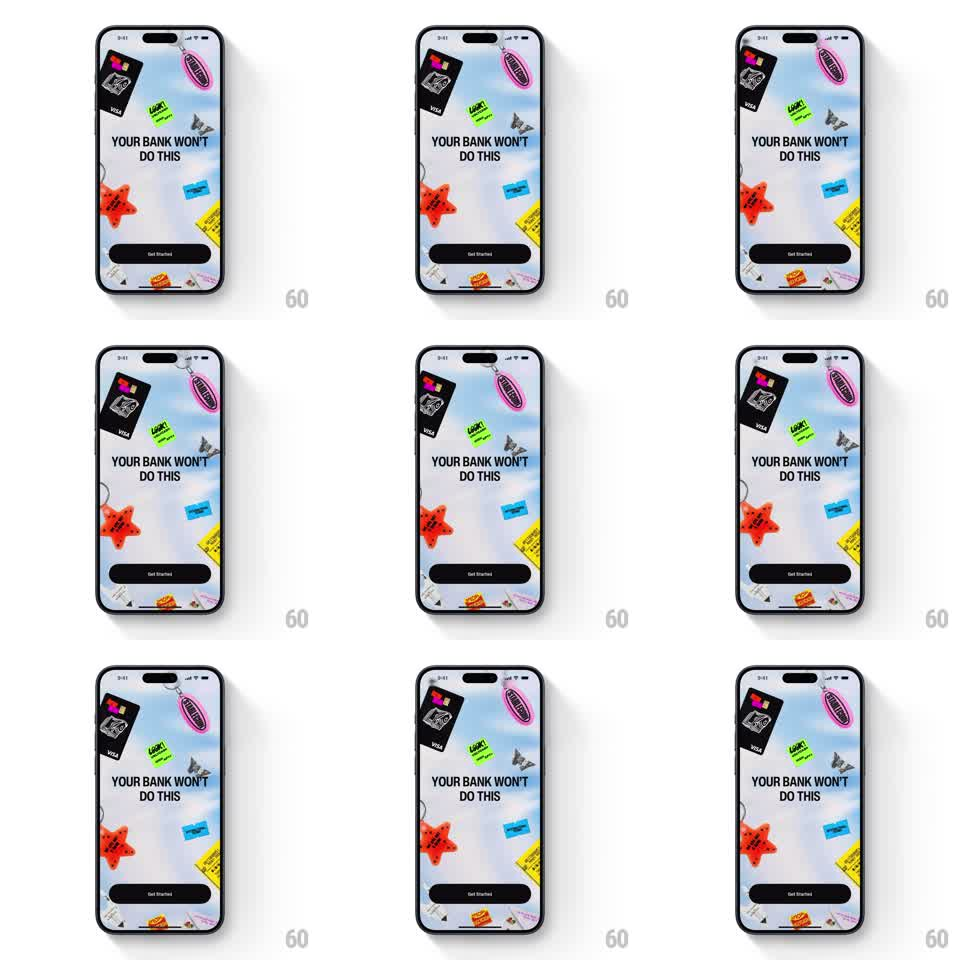

Media
Frame-by-frame

Rebuild this interaction 1:1: Uglycash's get-started screen - a collage of sticker-style elements (bank card, starfish, barcode tags, butterfly) floats over a marbled background and shifts with gyroscope parallax as the phone tilts.

Rebuild this interaction 1:1: Uglycash's get-started screen - a collage of sticker-style elements (bank card, starfish, barcode tags, butterfly) floats over a marbled background and shifts with gyroscope parallax as the phone tilts. ## Integration Integration: stack-agnostic spec - springs given as stiffness/damping, timed motions as duration + curve; map every value to your framework and animation library of choice. ## Scene Light marbled-lilac background covered in stickers: a black Visa card on a keyring (top-left), a pink oval tag, a green "UGLY!" burst, a red starfish with text, barcode stickers, a cassette, a small butterfly. Center: "YOUR BANK WON'T DO THIS" in heavy black type. Bottom: a black "Get Started" pill. ## Motion spec Pattern: gyroscope parallax over a static sticker collage. - Tilting the phone shifts every sticker opposite the tilt, each at its own depth: the Visa card (nearest) moves up to 18pt, mid stickers 8-12pt, the background marble 4pt (all smoothed with a 180ms low-pass). - Each sticker also counter-rotates a touch (+-2deg at full tilt) so the collage feels loose, not rigid. - The headline and Get Started button stay screen-fixed - they are not part of the parallax field. - On entry, stickers pop in with a scatter stagger (scale 0.6 -> 1.05 -> 1, spring ~300/15, 50ms apart, random order, 600ms total). ## Calibration - Depths must differ visibly: if every sticker moves together, the effect is dead. - Motion is smooth and slow - tilt response should feel like the stickers float in water. ## Reduced motion Parallax disabled; stickers animate in once and hold. ## Don't miss - Stickers keep their printed look: white die-cut borders, slight drop shadows, fixed rotations. - The marble background is part of the depth stack - it drifts the least.